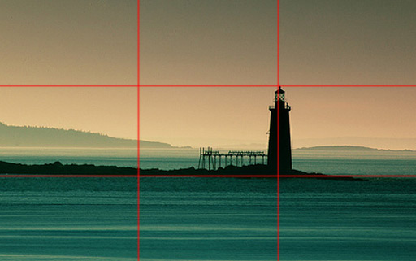
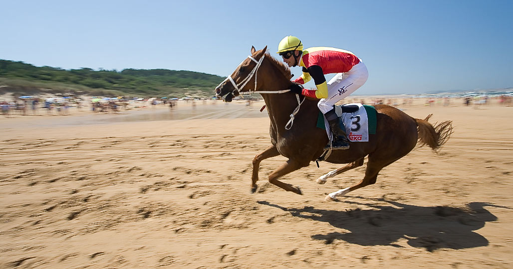

2.2-Ubicacion
Regla de los tercios:
Nos indica que si dividimos la imagen a partes iguales por dos líneas horizontales y dos verticales, los cuatro puntos de intersección de dichas líneas son los que mayor atención recibirán del espectador (y en el orden antes indicado).
Debido a esto podrá deducirse igualmente que el motivo no debe ir centrado en el encuadre sino que es preferible desplazarlo ligeramente a la izquierda ya que así se obtienen imágenes menos simplistas, más atractivas y que ayudan al ojo a recorrer los puntos de atención.

Las líneas dominantes:
Son líneas "imaginarias" que se encuentran en la fotografía implícitamente y son útiles para dirigir la atención del espectador. Se puede hallar una línea casi en cualquier cosa. Una de las normas más populares de la composición se basa en la repetición de las líneas y objetos, especialmente cuando el tema es una estructura. Las líneas pueden ser, horizontales, verticales, curvas u oblicuas. Las diagonales y líneas en "S" son mucho más interesante que las líneas paralelas, se utilizan para imprimir un cierto movimiento a las fotos.
El caso más básico de línea dominante es la de horizonte. La línea de horizonte actúa de referente para el espectador y es conveniente colocarla recta (no inclinada) y no en el centro vertical de la imagen sino a dos tercios (por arriba o por abajo) ya que si se coloca la línea del horizonte al centro se obtendrá una imagen descriptiva, inexpresiva; mientras que al bajarla o subirla estamos primando el cielo, el mar o la tierra como fondo (o incluso motivo) de la imagen.
Líneas diagonales
Son las que a menudo se forman en las fotografías,como una barandilla de un paseo, una vereda, un camino... todos estos elementos forman líneas dominantes en la fotografía y pueden, por tanto, ser usados para conducir la atención. Un recurso habitual es colocar estas líneas en las diagonales de la fotografía haciéndolas coincidir con una o más esquinas de la misma: así el ojo recorrerá esas líneas desde las esquinas a los centros de interés ayudando a dirigir hacia ellos la atención del espectador.
Al cortar las líneas dominantes con uno de los lados de la fotografía esta parece interrumpirse bruscamente, mientras que al llevar una línea a una esquina da la sensación de continuidad.
Casos especiales de líneas dominantes: la mirada y el movimiento.
- La mirada de un ser humano traza una línea dominante imaginaria en la foto de gran fuerza expresiva que debe ser respetada y resaltada por el fotógrafo. Cuando la persona retratada está mirando hacia algo debe abrirse el encuadre situando a la persona a un lado y dejando un espacio libre delante de ella para ser ocupado por su mirada.
- Una persona u objeto en movimiento también describe una línea dominante imaginaria que es su trayectoria y que también puede tener gran fuerza expresiva. Cuando el motivo esté entrando en la escena es conveniente abrir el encuadre nuevamente y dejarle un espacio libre delante para que sea ocupado por su trayectoria y resaltar el efecto de movimiento.
- 
- LA REGLA DE LOS TRES TERCIOS
Pregunta de Elección Múltiple
Solución
Pregunta Verdadero-Falso
Retroalimentación
Verdadero
Licencia: dominio público